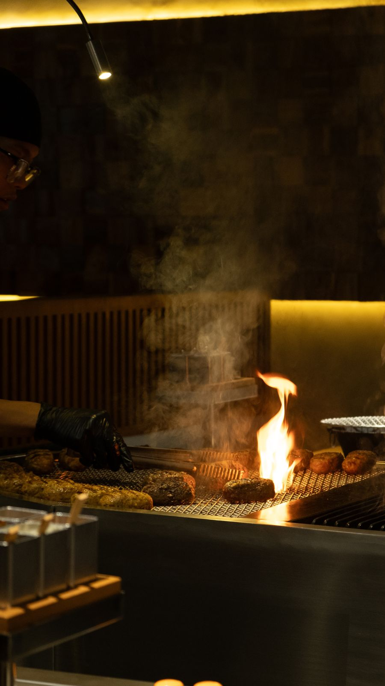
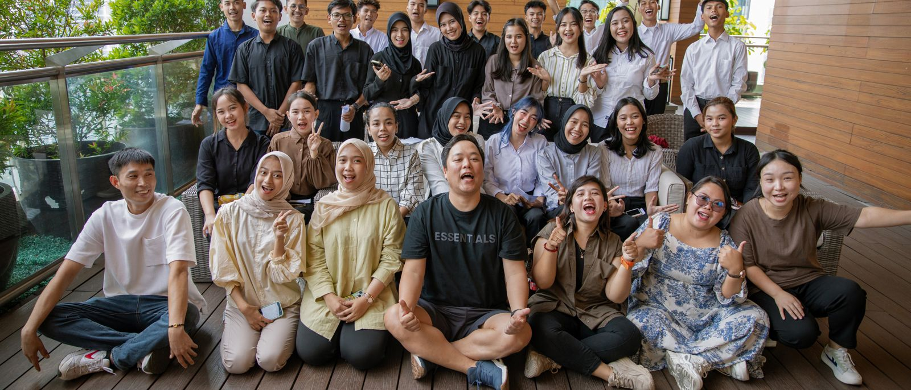

5
Stores · 376 Seats
Jakarta 4 · Surabaya 1

SURA takes its name from surasang, the royal table of Korea's kings — where the finest ingredients were prepared with the greatest care. That is the spirit we bring to every table today.
Our Tteokgalbi, once served to royalty, is made from finely minced beef, seasoned with Korean soy sauce and grilled to order. Beside it, our 100% Wagyu Hamburg Steak carries the same tradition into a modern form. SURA is where Korea's culinary heritage meets contemporary dining.
The Taste of Happiness, Crafted with Care.
Food made from carefully chosen ingredients and heartfelt hospitality, in a space where guests feel the warmth of Korean culture.
To set the standard for Premium Korean Dining in Indonesia. Traditional dishes made properly, reinterpreted through modern space and modern presentation. Not fusion. Korean food, done right, in a space built for today.
Served with Japonica rice, Korean soup, omega-3 egg, kimchi, pickles and six house-made signature sauces. Rice and soup refilled freely.
SURA was created for women aged 25–45 who enjoy discovering new cultures through premium food. Over time it has become a destination for multigenerational families: our hamburg steaks are tender and easy to enjoy, loved by children and grandparents alike.
Our core guests are Indonesia's Chinese community and urban professionals, with Muslim guests accounting for 10–20% of visits. Average spend per guest: Rp 230,000–260,000.
As of 26 October 2026
A perfect 5.0 with more than 10,000 reviews at a single store is rare anywhere in the world. These numbers are not the result of a campaign — they come from reading every review, every day, and acting on it.
Verbatim from Google Reviews
Wagyu steak 10/10. Tteokgalbi 9/10. Korean traditional soup 11/10.
The hamburger steak is thick, juicy, and packed with rich beef flavor. A beautifully seared crust on the outside while staying tender and moist inside.
One of the main highlights is definitely the live cooking. It was so exciting to watch the staff grill and torch the meat right in front of the counter.
From the moment we arrived, we were warmly welcomed by the staff, who helped explain the menu clearly. They even asked if we wanted help separating the egg yolk.
All the staff who served us were very friendly, attentive, and helpful. Definitely a place I'd be happy to visit again.
Great queuing system, all digital. The portion is big, and you can refill rice, soup, condiments. Excellent service.
Top 10 Most Favorite Asian Dining (2026)
Featured twice among "5 Hamburg Steaks in Jakarta" (Aug 2025, Apr 2026) — "SURA went viral from the moment it opened."
Listed in "Surabaya New Tables, October 2026"
Double Wagyu Hambak 9/10 — "Juicy and flavorful even without dipping it into anything."
"Viral Korean BBQ in South Jakarta", "worth the hype", "the SURA everyone's talking about" — creator content across all five stores
SURA's first store outside Jakarta has sustained 6 to 9 seat turns per day on 58 seats for five weeks since opening, with a digital queuing system managing waiting guests. Surabaya proved that the SURA model travels.
SURA runs every function a restaurant needs through its own specialized divisions, and manages all of it in one system — our own SURA Manager app. Because nothing is outsourced, quality and speed are managed together. Tap any card for details.
Budgeting, cost control, purchasing and monthly reporting — every store managed on the same numbers.
DetailsA 100% local team running social content, creators, events and local collaborations — plus AI-driven CRM for 50,000+ registered members.
Recruiting, training and career development for a 140-person team, with store leaders promoted from within.
DetailsSauces, marinades, side dishes and desserts are produced centrally and delivered to every store daily — the same taste in every store.
DetailsDesign and construction management for new stores, opening readiness, and maintenance of existing stores — consistent quality and reliable opening timelines.
DetailsEvery store-related task — reports, reviews, openings, menus, marketing, communication — runs through our own SURA Manager app, in four languages, from any browser.
DetailsStandardized recipes, portion specs and cooking times. Chefs are trained and certified before they cook for guests.
DetailsOne written service SOP for every store, from the first 30 seconds to the goodbye at the door.
Every review, online and in-store, is reported to management the same day and acted on.
DetailsSURA hires locally, sources locally, and partners with the brands each city loves.
Surabaya's iconic cake, served with SURA's signature soft serve — complimentary for every dining guest.
Surabaya's legendary sambal, placed on every table in its original packaging — free for every guest.
In F&B since 2008, he built and scaled six restaurant brands across China, each reaching No. 1 in its region for customer satisfaction, service and revenue. He founded SURA in 2023 and opened its first store in Jakarta in September 2024. He leads brand, expansion and systems.
With more than 20 years in marketing, he founded China's first premium community media company (later acquired by BlueFocus) and co-founded the social commerce leader Lemonade. He co-founded SURA in 2023, bringing an internet-plus-dining approach to Indonesia.

A headquarters team of Korean, Chinese and Indonesian professionals, with 100% local store and marketing teams — 140 people in total.
Our Expansion PrincipleWe enter each city through its single most influential shopping mall first. We prove SURA at the address that defines the city — then we expand.